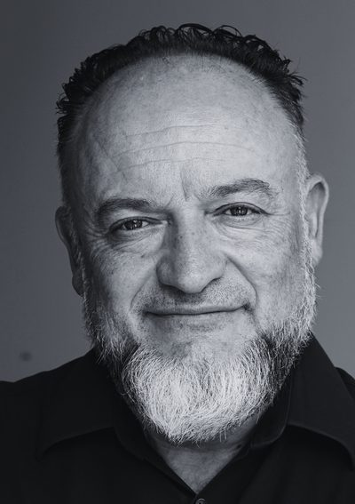

MANEL RUEDA
Autor de «El Ikigai que no te contaron» y creador del enfoque IKIGAIER

Un espacio para explorar propósito, consciencia y acción desde una forma más humana, profunda y real de entender el ikigai.
Durante años busqué el propósito en el hacer, en los resultados y en las respuestas rápidas. Con el tiempo entendí que el sentido no se encuentra solo avanzando, sino aprendiendo a no separarte de ti mientras caminas.
De esa búsqueda nace IKIGAIER: una forma más humana, profunda y real de mirar el ikigai.
Entrar en IKIGAIERCamina sin separarte de ti.
Libros
-
No todo lo que te frena es tuyo
Por qué lo conseguiste casi todo y sigues sintiendo ese vacío: los atajos que trae de serie cualquier cerebro y las creencias que te instalaron, y cómo se sostienen entre sí.
-
Disciplina para indisciplinados
Motivación y fuerza de voluntad son dos sistemas distintos. Ocho patrones para entender por qué lo dejas y cómo retomar sin empezar de cero.
-
El Ikigai que no te contaron
Una mirada profunda, clara y honesta sobre el ikigai real y la distancia entre lo que haces y lo que eres. Sin postureo. Sin atajos.
-
Camina sin separarte de ti
Cuaderno de trabajo. Una invitación a parar, mirar hacia dentro y poner por escrito lo que normalmente no te atreves a decirte.